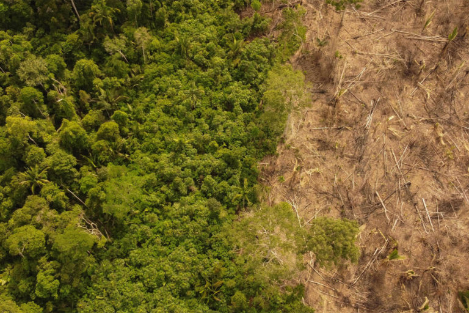
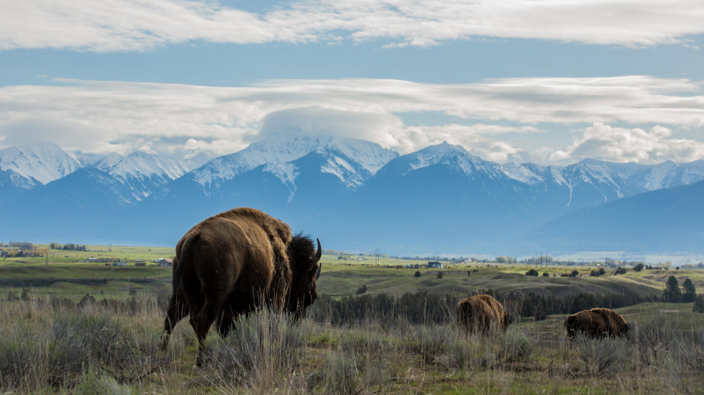

My goal was to put together an argument about lack of data accessibility and rights to tribes for their own informed decision making. I introduce the issue with examples of industry taking advantage of the data and power gap that puts natives at risk (health and environmental) with resource extraction. I continue to argue how the field of conservation in Western hands has been at a loss for not including Indigenous traditional management and perspectives on ecological data available. I conclude with ongoing efforts to return land and power to these Indigenous groups.
Internet and tool access:
Small communities and indigenous groups around the world have limited access to data collected on them and the tools for gathering and utilizing data. This data includes information about their citizens, communities, lands, resources, and culture which has been collected through “satellite research” by entities such as government and academia but not shared with the tribes. This leaves groups vulnerable due to lack of their own tools and infrastructure to incorporate data for decision making, and limited visibility of their concerns on a global scale. Internet data focused on the United States highlights that tribes have low availability of internet and few have affordable access, which is why just over half of Native American’s living on reservations with a computer have access to high-speed internet service. This is the lowest percent internet coverage in the nation, and a problem globally for Indigenous groups (Wang 2018). This invisible gap includes approximately 370 million Indigenous peoples living in 90 countries around the world (United 2009).
Ecological impact without Natives:
There is a larger ecological and conservation impact of these groups being isolated. Without internet tribes do not have educational access for the tools to analyze data, or access to the larger global community, which also means their voices are unheard in global conversations, including landscape conservation and resource management. As a result there is limited attention towards the industrial pressure on Indigenous lands. In addition, the knowledge and different perspectives within these tribes that could be brought into conservation efforts for landscape are overlooked. Keeping conservation sciences as “western” science isolates other perspectives and cultural significance of landscapes and ecosystems. Western science has dictated how we view data and how to use it, analyze it, and make decisions from it. Data can be used as a tool for Natives to tell stories and turn the information into art to understand the world in a different way, and weigh the data for their own informed decision making.
Industry takes advantage of the gap in data accessibility and land rights:
These regions have been taken advantage of by industry and the government, benefiting from this global blind spot on indigenous lands and environmental impacts. Indigenous land rights are only recognized in a few countries around the world, and even in these few there are complications with land titling and the governments have often leased out the lands for resource extraction without consultation. In many cases, this has led to indigenous groups forced to leave their lands due to the destruction of their self-sustaining ecosystems (Guri 2022). Resource extraction for mineral, oil and gas deposits has caused environmental degradation on native lands without the attention of the wider global arena interested in conservation efforts. Ultimately it is the native communities that have the negative fallout of environmental hazards, and they do not benefit from the extracted resources.
This is a global problem with western interests working with local governments to gain access to resources on Indigenous lands. Companies are based often in other countries, such as the Australian mining company Asumah Resources Limited entering the upper west region of Ghana for gold prospecting with support of the government. This included the Tanchara community, who noted a rapid decline in their sacred groves and other sites, including significant plant species becoming locally extinct and the loss of wildlife (Guri 2022). The natives are often unaware of the decisions, their rights, and the potential impact. In this case the threat to their sacred groves and natural sites was reviewed by an outside group (Center for Indigenous Knowledge and Organizational Development in Ghana); this center was able to speak up to the government on behalf of the Natives, who did not have the tools for the impact surveys and the communication medium (Guri 2022). This was a win for the community, but often there is no one looking when the rights of tribes are taken advantage of for industrial progress.
Government policy intertwines with industry affecting these issues. Brazil’s indigenous lands are under threat under changing political agendas, with Bolsanaro’s campaign to opening up Indigenous lands to exploitation. He issued an executive order transferring regulation of Indigenous reserves from the government’s Indigenous Agency (FUNAI) to the Ministry of Agriculture, which is invested in agribusiness interests. Bolsanaro further announced plans to open Indigenous reserves to development without requiring Indigenous consent. Even with government checks returning some of the land rights to tribes, these actions encouraged a 40% increase of illegal miners entering Indigenous Territory, polluting rivers with mercury (Squires 2020).

Indigenous tribes take care of their land when given rights and data access:
Indigenous regions with proper protection are successful with their own interests of conservation, for example some of the world’s healthiest tropical forests are within protected Indigenous areas. The integrity of these forests, and overall biodiversity scores, are highest in Indigenous communities compared to any other land management with human development (Abulu 2022). A study reviewing 169 publications of different forms of conservation management found that conservation efforts without Indigenous groups resulted generally in ineffective conservation. Indigenous lands had higher levels of biodiversity and natural productivity than other managed lands (Dawson 2019). Supporting this finding, another study reviewing Indigenous-managed lands through Australia, Brazil, and Canada found these areas were richer in vertebrate species than existing government protected landscapes (Robbins 2021).
Tribes have a different perspective of conservation, connecting the landscape with art and culture and utilizing sustainable harvesting practices. There are different motivations for conserving the ecosystems, and knowledge of ecological interactions. An example of the different approaches to wildlife management can be found in the United State’s first tribal wilderness area, Mission Mountain Wilderness Area, which annually closes off 10,000 acres for grizzly bears to feed high in the mountains undisturbed (Robbins 2021). This extra consideration for the habits of the wildlife are unheard of in western management styles. Indigenous management styles have evolved over centuries with these cultures immersed in nature. The style of management differs due to the varied concepts of nature, Indigenous knowledge tending to be more holistic and presenting characteristics to wildlife that westerners only attribute to humans (Robbins 2021).
Two major issues are highlighted with Indigenous land rights, one is conservation of the ecosystems, and the other is conservation of the culture and people. The tribes culture and lifestyle is entwined with their surroundings and their management of the landscape, utilizing traditional knowledge to support wildlife and protect ancestral grounds. Traditional ecological knowledge had been lost in conservation, such as the traditional use of prescribed fires to manage resources (Robbins 2021). With great attention to the land, these groups knew how to use fire to manage wildlife habitat and forests, increasing ecological resilience, and encouraging growth of useful species (Robbins 2021). The tribes ensure a healthy landscape and wildlife populations that they can live with and utilize. This management style is more active, as Indigenous groups see the land to live with, versus the Western view of highly developing a region and keeping protected areas isolated.
Going Forward

Equitable conservation provides local groups the tools and empowerment to be stewards of their land. Providing land tenure and management rights to Indigenous tribes to protect and conserve their lands will benefit conservation as a whole. With most of the high-integrity forests left occupied by Indigenous people, conservation efforts must consider protecting both the ecosystem and the people (Abulu 2022). Creation of protected park areas do not need to remove tribes to protect these ecosystems, it would be more beneficial to provide native’s around the world with land tenure rights and their own ability to manage the landscape. Ultimately Native voices should be uplifted to have a larger say in conservation efforts outside of their reservations within their historic territories.
Across the United States, there has been a slow movement in recent years to return land to Indigenous tribes. A previously seized 18000 acres of land set aside for bison conservation has been returned to the tribes. Bison were plentiful before colonization and development, so it is cruelly ironic to have taken the land and bison away from the Indigenous groups who were properly managing the populations before. The U.S. government attempt at managing these populations was isolated from the ancestral knowledge the tribes had of the animals, displaying the lack of data transfer between both parties. These animals are considered almost familial to the tribes who once relied on their abundance for food, clothing, and shelter. The change in management back to the tribes has changed the focus of conservation, acknowledging the animal’s characteristics that were otherwise overlooked in Western management practices. The native’s management of these herds recognize the importance of family groups and practice to keep these groups together (Robbins 2021).
Some tribes are able to work within governmental processes to find access to their ancestral lands. The Australian government has bought up a series of farm properties with the goal to restore the beneficial wetlands that were degraded from agriculture and water diversion. Proposals were accepted for the management of these wetlands and ultimately gave the right to the Indigenous group Nari Nari who had inhabited the region for 50,000 years (Robbins 2021). This ancestral knowledge held within this tribe is unavailable to outside sources, and invaluable to restore and protect the landscape they lived so closely with. An increase of co-management with Natives is also benefiting conservation of wildlife and plants utilizing traditional knowledge and practices.
One larger attempt to bring data collection and the power of data to Indigenous groups is through the Indigenous Navigator, focusing on Indigenous rights including land and conservation rights. The Indigenous Navigator was created with respect of the diversity of values and cultures globally. The purpose is to assist with data collection to support each group’s innovation to “contemporary problem-solving through community assessments, mapping, environmental tracking, and support for their livelihoods and social enterprises” (Calatan 2022). Community-based monitoring and information systems allow data to be collected from within the indigenous groups, and are then connected with the Indigenous Navigator to relevant actors on a global scale. This organization collectively attacks the problem of data rights by providing the groups ability to collect their own data, and bringing visibility and connectivity regarding problems faced by the groups.
The global conservation movement would be stronger with the allies of Indigenous peoples, providing these groups with the resources and voice to speak up. There needs to be discussion on not just what to conserve, but how to conserve it and who manages it. To tackle these issues, Indigenous tribes should have access on data collected on the Native’s land from outside groups such as government, academic, and industry. Affordable internet and training opportunities for tribal members to learn how to use the tools needs to be available. Each tribe should be given the rights to decide how to collect and use their data. These steps will provide Indigenous groups the ability to make their own sovereign decisions, and unite ancestral perspectives with today’s technology to empower their voices in conservation on a global scale.
References
United Nations Department of Economic and Social Affairs. (2009). State of the world’s Indigenous peoples. New York, NY: United Nations Publications. https://www.un.org/esa/socdev/unpfii/documents/SOWIP/en/SOWIP_web.pdf
Wang, Hansi Lo. “Native Americans On Tribal Land Are ‘The Least Connected’ To High-Speed Internet.” NPR, December 6, 2018. https://www.npr.org/2018/12/06/673364305/native-americans-on-tribal-land-are-the-least-connected-to-high-speed-internet.
Abulu, Latoya, and Laurel Sutherland. “Indigenous Lands Hold the World’s Healthiest Forests - but Only When Their Rights Are Protected.” Mongabay, Indigenous Peoples and Conservation, November 7, 2022. https://news.mongabay.com/2022/11/indigenous-lands-hold-the-worlds-healthiest-forests-but-only-when-their-rights-are-protected/
Robbins, Jim. “How Returning Lands to Native Tribes Is Helping Protect Nature.” Yale Environment 360, June 3, 2021. https://e360.yale.edu/features/how-returning-lands-to-native-tribes-is-helping-protect-nature.
Calatan, Jimrex. “Raising Indigenous Voices through the Indigenous Navigator Framework.” TebTebba, May 28, 2022. https://tebtebba.org/index.php/news-and-updates/raising-indigenous-voices-through-the-indigenous-navigator-framework-indigenous-data-to-secure-rights.
Guri, Bernard. “Rescuing Tanchara Community Lands from Gold Mining Through Biocultural Community Protocols.” Cultural Survival, August 31, 2022. https://www.culturalsurvival.org/publications/cultural-survival-quarterly/rescuing-tanchara-community-lands-gold-mining-through.
Maffi, L. (Ed.). (2001). On Biocultural Diversity: Linking Language, Knowledge, and the Environment. Washington and London: Smithsonian Institution Press.
Dawson, N. M., B. Coolsaet, E. J. Sterling, R. Loveridge, N. D. Gross-Camp, S. Wongbusarakum, K. K. Sangha, L. M. Scherl, H. Phuong Phan, N. Zafra-Calvo, W. G. Lavey, P. Byakagaba, C. J. Idrobo, A. Chenet, N. J. Bennett, S. Mansourian, and F. J. Rosado-May. 2021. The role of Indigenous peoples and local communities in effective and equitable conservation. Ecology and Society 26(3):19. https://doi.org/10.5751/ES-12625-260319
Squires, Carter, Kelsey Landau, and Robin Lewis. “Uncommon Ground: The Impact of Natural Resource Corruption on Indigenous Peoples.” Brookings, August 7, 2020. https://www.brookings.edu/blog/up-front/2020/08/07/uncommon-ground-the-impact-of-natural-resource-corruption-on-indigenous-
Citation
@online{dale2022,
author = {Erica Dale},
title = {Ethics {Blog} {Post}},
date = {2022-12-05},
url = {http://ericamarie9016.github.io/2022-12-5-ethics-proj},
langid = {en}
}